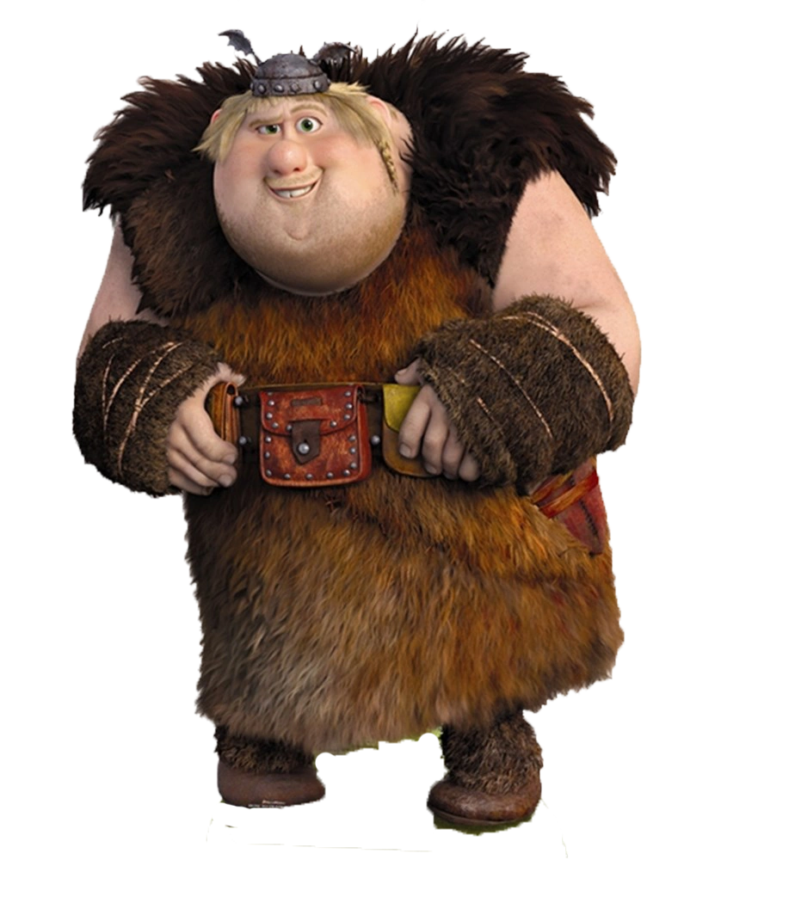

Jumeau Thorston, co-dresseur de Krochefer
| Rôle | Dragonnier |
| Affiliation | Tribu de Beurk |
| Dragon | Krochefer (Gronk, partagé avec Rustik) |
| Famille | Rustik Thorston (frère jumeau) |
| Particularité | Jumeaux inséparables mais souvent en désaccord |
Varek est le deuxième des jumeaux Thorston. Tout aussi impétueux que Rustik, mais avec son propre caractère bien trempé. Son rapport à Krochefer le Gronk, partagé avec son frère, est souvent source de conflits comiques entre les deux. Malgré leurs disputes incessantes, les jumeaux Thorston forment une équipe solide quand ça compte vraiment.